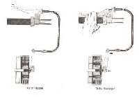

The clutch lever needs much more force than before, your hand gets tired in traffic, or the lever creaks and sticks. A heavy lever is a warning: the most common cause is a dry, rusty or fraying cable, which can snap. Other causes are a dry lever pivot, a cable routed with a tight bend, or a stiff release mechanism or bearing inside the engine.
Is it safe to ride?
Ride with care, and fix it soon. A fraying cable can snap without warning, leaving you unable to release the clutch: see Clutch lever has no resistance or the cable has snapped.
Quick checks first
- Look at the cable ends at the lever and at the engine for broken strands or rust.
- Look along the cable for sharp bends, kinks or tight cable ties, especially after handlebar or bodywork changes.
- Turn the handlebar lock to lock while pulling the lever: does it get heavier at one side?
Diagnose it step by step
1Slacken the adjuster and unhook the cable from the lever. Does the lever on its own move freely on its pivot?
- No: the pivot is dry, rusty or bent. Service lever pivots; a bent lever: Brake or clutch lever is loose, bent or broken.
- Yes: go to step 2.
2With the cable still unhooked at the lever, pull the inner cable by hand (or with pliers). Does it slide easily in the outer?
- No, it is stiff or gritty: Lubricate control cables. If it stays stiff, or any strands are broken: Replace the clutch cable.
- Yes: go to step 3.
3Is the cable routed with gentle curves, through the original guides, and not pinched by ties?
- No: reroute it. The K-Light manual's routing rules say cables must not be bent sharply, pinched or pulled when the steering turns.
- Yes: go to step 4.
4Unhook the cable at the engine end. Push the release arm by hand (or with a spanner). Does it move with moderate effort?
- No, the arm is very stiff: the lifter, its bearing or the pushrod is sticking or damaged inside the engine (K-Light fault table). Go to Inspect and replace clutch plates and springs.
- Yes: refit everything and Adjust clutch lever free play.
5Was the clutch recently rebuilt with different springs?
- Yes: stronger aftermarket springs make the lever heavier. Fit the springs listed for your model.
Hydraulic clutch (reservoir on the lever): a heavy lever usually means a sticking master or slave cylinder piston. That needs a workshop.
Causes, most likely first
| Cause | How to confirm | Fix |
|---|---|---|
| Dry, rusty or fraying cable | Inner cable stiff when pulled by hand | Replace the clutch cable |
| Dry or bent lever pivot | Lever stiff with cable unhooked | Service lever pivots |
| Bad routing | Sharp bend, pinched tie, worse at full lock | Reroute and refit ties |
| Stiff lifter or bearing in the engine | Release arm stiff with cable off | Inspect and replace clutch plates and springs |
| Wrong springs | Recent rebuild | Fit the model's springs |